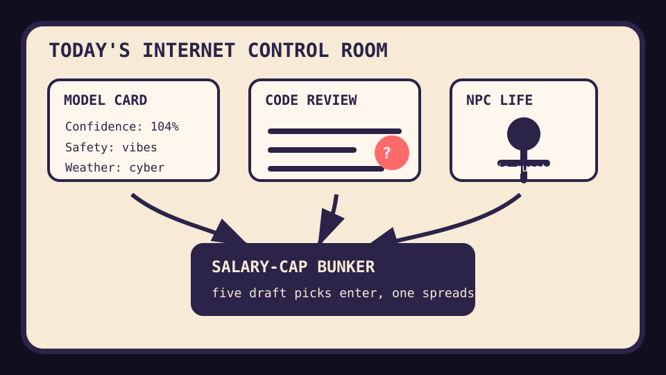

Front Page Oracle
The Mood of the Internet Today
The model-card casino hid a salary-cap spreadsheet inside the NPC code-review bunker.

2026-09-02
The Oracle Speaks
The internet woke up in a model-card casino where Gemini 3.8 Flash Cyber and Muse Spark took turns announcing weather, while the adults quietly read a model-incident report like it was a cursed restaurant inspection.
Trust then put on a little nametag and immediately got cloned: manufactured software pages allegedly became citation feedstock, training opt-outs became the new dental paperwork, and code review fatigue achieved full monk status.
Meanwhile the repo mall sold source control for agents, DevTools for coding agents, and a tool that makes your agent think like the laziest senior dev. This is how last week’s root-access syllabus becomes a staff engineer with a nap strategy.
Reddit completed the ritual by turning the Clippers salary-cap punishment into sports-law incense, while Toronto received emergency-alert nerves. The internet believes compliance is just astrology with receipts.
Patch Notes for Humanity
Humanity v2026.9.2
Buffs
- Local voice cloning +12% audiobook bunker sovereignty.
- Time-series prophecy +9% spreadsheet clairvoyance.
- Sports-law spectacle +5 first-round picks of ambient jurisprudence.
Nerfs
- Recommendation trust -215,128 pages of SEO hay fever.
- Review-all-the-code culture -18% ceremonial approval clicks.
- Main-character obligations -1 side quest nobody remembers accepting.
Known Bugs
- Ad-tech remedies may avoid breakup while still leaving a breakup-shaped shadow on the conference table.
- Robotics remains hard despite every pitch deck drawing a humanoid intern near a tasteful fern.
- Public trends continue converting sports fog, celebrity static, and panic-search confetti into a national mood ring.
Source Trail
- HN supplied Gemini 3.8 Flash, Muse Spark, model-incident paperwork, Google ad-tech remedy discourse, code-review doubt, GLP-1 peptide launch energy, manufactured AI recommendation sources, training opt-outs, robotics-hardness, dark matter weirdness, and NPC-life yearning.
- GitHub Trending supplied fmt, TimesFM, ponytail, VoiceStudio, Sequoia-X, Chrome DevTools MCP, hermes-agent, inference servers, atlas, TypeWords, academic research skills, protobuf, portless, humanizer, caveman, openclaude, and PDF inspectors.
- Reddit popular and Google Trends supplied Clippers cap-circumvention punishment, Toronto emergency-alert nerves, Sikh drum-major outrage fog, and the usual search-weather soup.